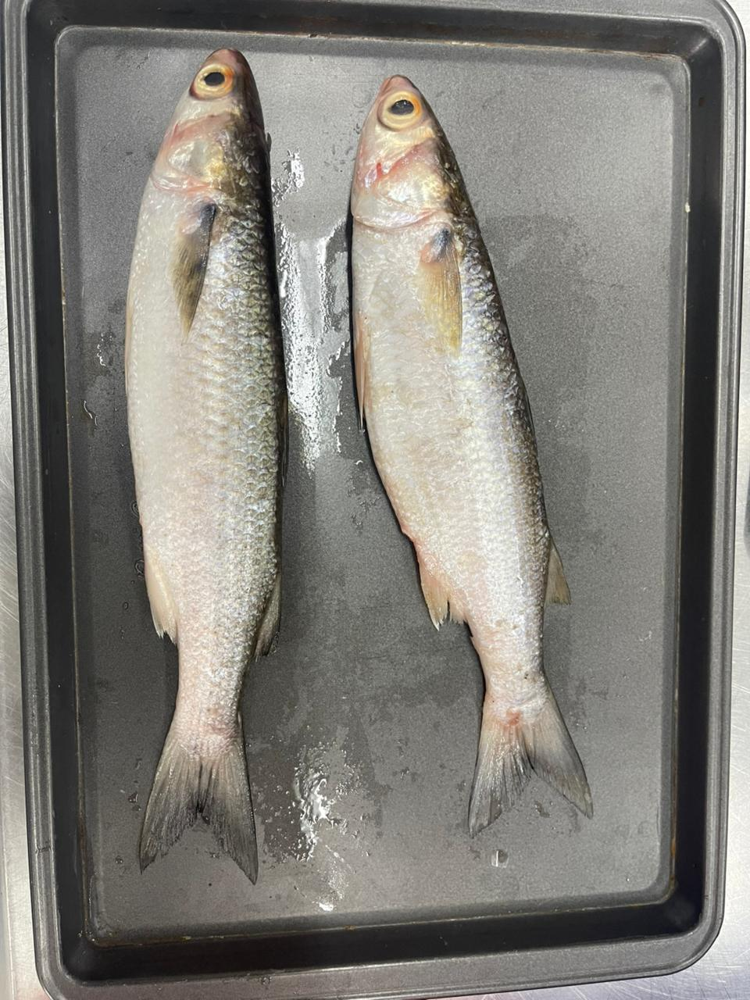

Lisa
Detalles completos de la lisa del Caribe colombiano.
← Volver al catálogo

Lisa (Mugil incilis)
Mito: La pequeña limpiadora del mar, encargada de ordenar los fondos y reciclar la vida.
25 cm (AUNAP)
Estuarios y zonas costeras
Morfología
Cuerpo alargado, relativamente cilíndrico, con boca pequeña y labios gruesos adaptados a la filtración de sedimentos.
Características organolépticas
Carne blanca, suave y de sabor delicado; muy apreciada en preparaciones caseras.
Hábitat
Zonas estuarinas, desembocaduras de ríos y aguas someras costeras.
Valor nutricional
Aporta proteínas de buena calidad y grasas moderadas; ideal para dietas balanceadas.